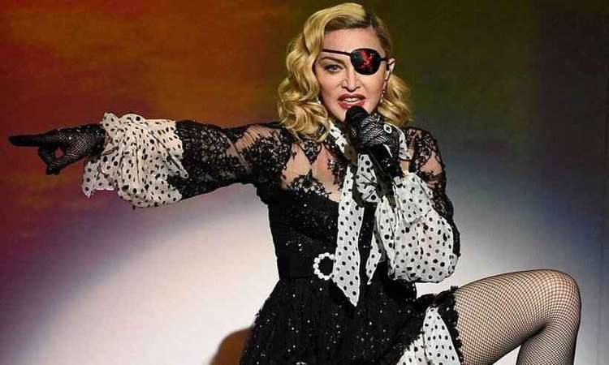

Madonna
Madonna é uma cantora compositora, produtora musical, atriz e dançarina americana. Consagrada como a "Rainha do Pop", desde os anos 1980, ela é considerada uma das maiores figuras de impacto na cultura por sua reinvenção e versatilidade de suas produções musicais, suas composições e apresentação visual. Suas obras musicais que abordam temas sociais, políticos, sexuais sempre geraram polemicas, mas também muita aclamação para a artista. É uma influencia forte e direta para muitos artistas do meio pop por ser pioneira e por seus feitos marcantes. Foi ficando conhecida com lançamento de diversos singles e discos de impacto ao longo dos anos como Live a Virgin (1984) e True Blue (1986) que são os dois álbuns mais vendidos de todos os tempos. A revista Billboard a nomeou a artista solo de maior sucesso na história da tabela Hot 100 com muitos singles lançados que alcançaram a marca de primeiro lugar em vários países que são os de maior nome da carreira da cantora como Like a Virgin", "Like a Prayer", "Vogue", "Take a Bow", "Music", "Hung Up" e "4 Minutes". Madonna é reconhecida mundialmente pelo seus feitos e sucesso no meio pop segundo a Revista Times "iniciou uma revolução entre as mulheres na música [...] Suas atitudes e opiniões sobre sexo, nudez, estilo e sexualidade forçaram o público a se sentar e prestar atenção [nesses temas]".